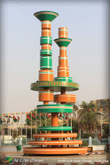

DESCRIPTION DE LA PLACE DES CINEASTES
La Place des Cinéastes est un rond-point emblématique de Ouagadougou, au Burkina Faso, célèbre pour son monument très coloré érigé en hommage au cinéma africain et au FESPACO.
Inaugurée en mars 1987, cette structure en acier de 12,25 m de haut et pesant 10 tonnes a été imaginée et conçue par l'architecte Ali Fao, l'urbaniste Ignace Sawadogo, et réalisée par Kaba Marius Drabo et Boubakar Galbani. Le monument met en avant les outils du 7e art (bobines de films entassées, objectifs, zooms) et se termine par le signe « V » de la victoire, symbolisant la victoire des cinéastes sur l'aliénation culturelle
HISTORIQUE DE LA PLACE DES CINEASTES
L’histoire de la Place des Cinéastes s’inscrit intimement dans la révolution culturelle burkinabè menée par le capitaine Thomas Sankara pour célébrer l’identité africaine à travers le 7e art.
- ➤La volonté de Sankara
- ➤Le défi technique
- ➤ L'inauguration officielle
En 1986, le président Thomas Sankara décide d'ériger un monument majeur pour honorer durablement les professionnels du cinéma africain. Ses émissaires sollicitent directement l'Atelier de Construction Métallique et Diverses (ACMD) situé dans la zone industrielle de Kossodo à Ouagadougou.
Le projet est confié au métallurgiste Marius Kaba Drabo, associé au concepteur Boubakar Galbani, sur la base des plans de l'architecte Ali Fao et de l'urbaniste Ignace Sawadogo. L'œuvre est intégralement assemblée pièce par pièce en atelier à partir de matériaux locaux et importés.
Le monument est officiellement dévoilé en mars 1987 lors de la 10e édition du FESPACO. Marius Kaba Drabo reçoit alors les félicitations directes de Thomas Sankara. Une discrète plaque portant les initiales "DMK" (Drabo Marius Kaba) y est toujours visible.
La Place des Cinéastes est un espace emblématique de Ouagadougou dédié au cinéma africain. Elle rend hommage aux acteurs du monde du cinéma et constitue un lieu symbolique associé au rayonnement culturel et cinématographique du Burkina Faso.
- Emplacement: situé devant l'hotel de ville
- Horaires: 24h/24
- Accès: gratuit
- Géolocalisation: Voir la Place des Cinéastes sur Google Maps